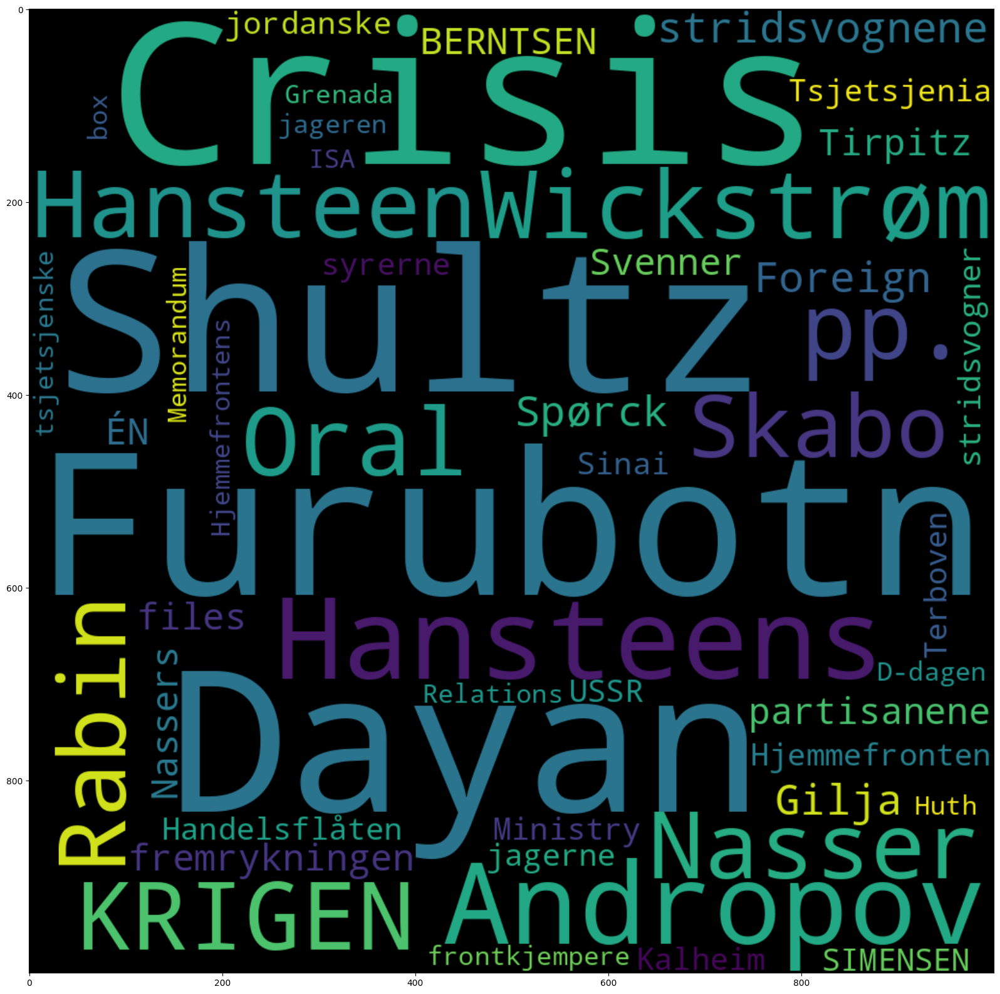

1.9. Sammenlign metadata#
from dhlab.api.dhlab_api import get_document_frequencies
from dhlab import Corpus, Counts, totals
import dhlab.nbtext as nb
1.9.1. Undersøk korpus med metadata#
En viktig metode i undersøkelse av metadata og tekster er grafer og nettverk.
Metadata er alt som er om teksten, fra forfatter til forlag. Også innholdsord kan sees på som metadata.
1.9.1.1. Bygg korpus#
Korpuset defineres med metadata som dewey, emneord, navn , år, etc. Her kan Webdewey være til god hjelp.
Se eksempelfil om Korpusbygging for ulike måter å definere korpus.
bøker = Corpus(
doctype="digibok",
freetext="krig OR krigen OR soldater",
from_year=1950,
to_year=2010,
ddk="9*",
lang='nob',
limit=30
)
bøker.frame.loc[:, ["title", "authors", "year"]]
| title | authors | year | |
|---|---|---|---|
| 0 | Vardan og armenernes krig | Eghishē / Lindeman , Fredrik Otto | 1992 |
| 1 | Vi sloss for Norge : frontkjemper og motstands... | Bryne , Arvid | 2008 |
| 2 | Det skjedde i Norge . 1 : 1945-1952 : den varm... | Ustvedt , Yngvar | 1990 |
| 3 | Kampen om Norge : tyskernes bilder fra det nor... | Olsen , Per Erik | 2008 |
| 4 | Den kalde krigen | Gaddis , John Lewis / Carlsen , Carsten | 2007 |
| 5 | " Men seier ' n var vår " : søkelys på omveltn... | Gogstad , Anders Chr . | 2003 |
| 6 | Krig , krise og sjølberging : Leirfjord 1940-45 | Berntsen , Gunnar | 1995 |
| 7 | Fra Narvik til Normandie | Dalzel-Job , Patrick / Gudmundsen , Per Kristian | 1996 |
| 8 | 1983 : den kalde krigens høydepunkt | Dahlberg , Rasmus / Lie , Kåre A. | 2006 |
| 9 | Seksdagerskrigen : juni 1967 og hvordan det mo... | Oren , Michael B. / Andersen , Jon | 2008 |
| 10 | Lavangen 1940 : informasjonshefte om 2. verden... | Borren , Arne | 1998 |
| 11 | D-dagen : den allierte invasjonen i Normandie ... | Tamelander , Michael / Zetterling , Niklas / R... | 2004 |
| 12 | Fra krig til fred i Songdalen 1940-1945 | Fjermeros , Erik | 1995 |
| 13 | Skilles og møtes : en sann fortelling om tro ,... | Thureson , Birger / Viumdal , Jan-Kristian | 1991 |
| 14 | Det utrolige døgnet | Bjørnsen , Bjørn | 1977 |
| 15 | Mot Onsøy 1814 | Øy , Nils E. | 1991 |
| 16 | Fortielsen : den kalde krigen og Peder Furubotn | Titlestad , Torgrim | 1997 |
| 17 | Krigen i Norge 1940. [ 1 ] : Operasjonene i Ro... | 1952 | |
| 18 | Minner fra krigen : 1940-1945 | Strand , Karl Ivar Arktander / Aasjord , Hugo | 2008 |
| 19 | De som tapte krigen | Fjørtoft , Kjell | 1995 |
| 20 | Øst-Europa i forvandling | Johansen , Jahn Otto | 1965 |
| 21 | Kryssild : mitt liv som flyktning : Burundi - ... | Ngendakurio , John Bosco / Holmedahl , Jostein | 2009 |
| 22 | Det ringer for siste gang : fra mitt liv på ha... | Bjørnstad , Arne | 1969 |
| 23 | Kvinner under krigen : norske kvinners innsats... | Simensen , Siri Walen | 2009 |
| 24 | Sjøkrigens skjebner : deres egne beretninger | Bøe-Hansen , Ola | 2005 |
| 25 | To liv - e ́ n skjebne : Viggo Hansteen og Rol... | Berntsen , Harald | 1995 |
| 26 | Livvakt i helvete : Aleksandr og krigen i Tsje... | Mannes , Siri Lill | 2006 |
| 27 | Israel beleiret : situasjonen i Midtøsten det ... | Borchsenius , Poul / Grønvik , Torbjørn | 1970 |
| 28 | Den annen verdenskrig . 1 : Opptakten : " aldr... | Piekalkiewicz , Janusz | 1987 |
| 29 | Den skjulte hånd : historien om Einar Johansen... | Christensen , Dag | 1990 |
1.9.1.2. Undersøk forskjeller#
1.9.1.2.1. Undersøk forskjeller internt i korpuset#
Her samler vi sammen alle bøkene i korpus og summerer. Men først la oss se på en del av korpuset som en dokument term matrise
# tar de fem første og henter frekvensene for alle bøkene
bøker_dtm = Counts(bøker.head(5))
bøker_dtm
| 100562108 | 100038162 | 100115822 | 100131537 | 100377030 | |
|---|---|---|---|---|---|
| . | 5057 | 1681 | 2088 | 3004 | 4762 |
| og | 2541 | 1004 | 2937 | 1621 | 2468 |
| i | 2363 | 692 | 1263 | 1559 | 2387 |
| , | 2297 | 763 | 3504 | 2160 | 7484 |
| var | 1410 | 475 | 501 | 1147 | 1702 |
| ... | ... | ... | ... | ... | ... |
| Cripps | 0 | 0 | 0 | 1 | 0 |
| hjelmer | 0 | 0 | 1 | 0 | 0 |
| gudebildene | 0 | 0 | 1 | 0 | 0 |
| forløpet | 0 | 2 | 0 | 0 | 0 |
| realisering | 0 | 0 | 1 | 0 | 0 |
33944 rows × 5 columns
1.9.1.2.2. Visualiser med varmekart#
Et varmekart gjør det enklere å få øye på likhet og variasjon i tallene.
nb.heatmap(bøker_dtm.frame.head(10), color="#045599")
| 100562108 | 100038162 | 100115822 | 100131537 | 100377030 | |
|---|---|---|---|---|---|
| . | 5057 | 1681 | 2088 | 3004 | 4762 |
| og | 2541 | 1004 | 2937 | 1621 | 2468 |
| i | 2363 | 692 | 1263 | 1559 | 2387 |
| , | 2297 | 763 | 3504 | 2160 | 7484 |
| var | 1410 | 475 | 501 | 1147 | 1702 |
| det | 1382 | 290 | 819 | 689 | 1781 |
| som | 1223 | 299 | 1310 | 982 | 1769 |
| av | 1210 | 429 | 794 | 693 | 1449 |
| til | 1115 | 387 | 960 | 826 | 1553 |
| de | 1064 | 460 | 1290 | 562 | 958 |
1.9.1.3. Undersøk forskjeller med frekvenser fra bokhylla#
Vi teller opp tokens i korpuset med Counts. Dette kan ta litt tid.
count_corpus = Counts(bøker)
Referansekorpus Kommandoen under lager et referansekorpus av de 150 000 vanligste tokenene i vår samling.
totals = totals(150000)
# Summer tokens fra korpus
bøker_total = count_corpus.frame.sum(1).to_frame("count")
# Frekvensliste for korpus
bøker_total
| count | |
|---|---|
| . | 136769 |
| , | 115085 |
| i | 62682 |
| og | 71691 |
| det | 32170 |
| ... | ... |
| bord-alarm | 1 |
| saltverket | 1 |
| dropposisjon | 1 |
| kloven | 1 |
| innBiZelBer | 1 |
139055 rows × 1 columns
For å lette arbeidet med å tolke forskjeller normaliserer vi frekvensene til tall mellom 0 og 1.
nb.normalize_corpus_dataframe(totals)
nb.normalize_corpus_dataframe(bøker_total)
True
forskjell = bøker_total.loc[:, "count"] / totals.freq
bøker_typiske_ord = forskjell.sort_values(ascending=False).to_frame("ratio")
bøker_typiske_ord.head(50)
| ratio | |
|---|---|
| Furubotn | 515.391408 |
| Dayan | 334.065624 |
| Shultz | 331.065087 |
| Crisis | 328.566845 |
| Andropov | 293.317402 |
| Hansteens | 238.932823 |
| Wickstrøm | 231.024789 |
| KRIGEN | 212.199792 |
| Oral | 190.211577 |
| Hansteen | 190.039781 |
| Nasser | 189.110622 |
| pp. | 181.931216 |
| Rabin | 177.890815 |
| Skabo | 177.148081 |
| stridsvognene | 173.570219 |
| Foreign | 159.047584 |
| Spørck | 155.194205 |
| Gilja | 144.356125 |
| fremrykningen | 141.612204 |
| partisanene | 141.598913 |
| Nassers | 139.883396 |
| ÉN | 134.68182 |
| files | 133.351206 |
| BERNTSEN | 121.394556 |
| Tirpitz | 119.933993 |
| Svenner | 119.718182 |
| Hjemmefronten | 119.623084 |
| syrerne | 116.657636 |
| Kalheim | 116.082217 |
| Sinai | 115.641996 |
| stridsvogner | 114.963862 |
| Tsjetsjenia | 113.682762 |
| SIMENSEN | 112.594871 |
| USSR | 111.408829 |
| Ministry | 107.564896 |
| jordanske | 106.908482 |
| Handelsflåten | 104.448192 |
| jagerne | 100.748805 |
| Terboven | 100.335717 |
| frontkjempere | 99.491356 |
| Huth | 99.230201 |
| D-dagen | 98.636608 |
| box | 98.114006 |
| Grenada | 96.089447 |
| ISA | 95.012092 |
| Hjemmefrontens | 92.858105 |
| jageren | 92.772245 |
| Memorandum | 92.244784 |
| tsjetsjenske | 91.945298 |
| Relations | 87.836661 |
1.9.2. Visualiser som ordsky#
nb.cloud((bøker_typiske_ord/bøker_typiske_ord.sum()).head(50))
